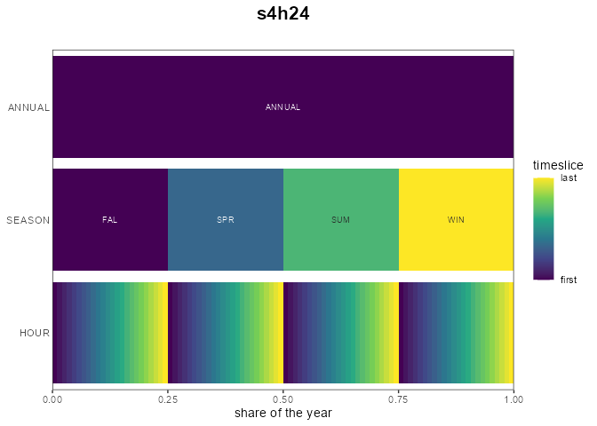

Time resolution: calendars and timeslices
Source:vignettes/articles/time-resolution.Rmd
time-resolution.RmdWhy sub-annual time matters
Annual averages hide what makes energy systems hard: the sun sets, wind stalls, demand peaks in the evening. A model that balances electricity once a year sees none of it — storage is pointless, solar looks dispatchable, peak capacity is free. A calendar gives the model sub-annual time timeslices, and the timeslice count is the main dial between realism and model size:
| calendar | structure | timeslices |
|---|---|---|
annual |
one annual timeslice | 1 |
topia_seasons |
4 seasons × day/night/peak | 12 |
s4_h24 |
4 seasons × 24 hours | 96 |
m12_h24 |
12 months × 24 hours | 288 |
d365 |
365 days | 365 |
Model variables scale roughly linearly with timeslices — the 96-timeslice TOPIA base case solves in seconds on GLPK, the 288-timeslice variant is noticeably heavier.
The make_timetable() grammar
A calendar’s structure is a nested named list: each
element is a level (e.g. SEASON,
HOUR), holding its timeslices. Timeslice names
must be alphanumeric (they become set elements in the solver files). The
simplest form lists timeslice names — the year is divided equally:
tt <- make_timetable(list(
SEASON = c("WIN", "SPR", "SUM", "FAL"),
HOUR = paste0("h", formatC(0:23, width = 2, flag = "0"))
))
head(tt) # 4 x 24 = 96 leaf timeslices, equal shares
#> ANNUAL SEASON HOUR timeslice share weight
#> <char> <char> <char> <char> <num> <num>
#> 1: ANNUAL FAL h00 FAL_h00 0.01041667 1
#> 2: ANNUAL FAL h01 FAL_h01 0.01041667 1
#> 3: ANNUAL FAL h02 FAL_h02 0.01041667 1
#> 4: ANNUAL FAL h03 FAL_h03 0.01041667 1
#> 5: ANNUAL FAL h04 FAL_h04 0.01041667 1
#> 6: ANNUAL FAL h05 FAL_h05 0.01041667 1Unequal shares are given per timeslice; a nested
list(<share>, <LEVEL> = ...) attaches child
levels. TOPIA’s 12-timeslice calendar makes peak hours short and winter
nights long:
tt12 <- make_timetable(list(
SEASON = list(
WIN = list(1 / 4, HOUR = list(DAY = 9 / 24, NGT = 12 / 24, PK = 3 / 24)),
SPR = list(1 / 4, HOUR = list(DAY = 11 / 24, NGT = 11 / 24, PK = 2 / 24)),
SUM = list(1 / 4, HOUR = list(DAY = 12 / 24, NGT = 9 / 24, PK = 3 / 24)),
FAL = list(1 / 4, HOUR = list(DAY = 11 / 24, NGT = 11 / 24, PK = 2 / 24))
)
))
head(tt12)
#> ANNUAL SEASON HOUR timeslice share weight
#> <char> <char> <char> <char> <num> <num>
#> 1: ANNUAL FAL DAY FAL_DAY 0.11458333 1
#> 2: ANNUAL FAL NGT FAL_NGT 0.11458333 1
#> 3: ANNUAL FAL PK FAL_PK 0.02083333 1
#> 4: ANNUAL SPR DAY SPR_DAY 0.11458333 1
#> 5: ANNUAL SPR NGT SPR_NGT 0.11458333 1
#> 6: ANNUAL SPR PK SPR_PK 0.02083333 1From timetable to calendar
newCalendar() turns a timetable into a
calendar object. Note that name is the
first argument — always pass the timetable by name
(timetable =), or name name/desc
so the timetable lands in the right slot:
cal <- newCalendar(timetable = tt, name = "s4h24")
cal@name
#> [1] "s4h24"
nrow(cal@timeslice_share) # timeslices with their share of the year
#> [1] 101
head(as.data.frame(cal@timeslice_share), 3)
#> timeslice share weight
#> 1 ANNUAL 1.00 1
#> 2 FAL 0.25 1
#> 3 SPR 0.25 1
cal@timeframe_rank # levels, coarsest (ANNUAL) to finest
#> ANNUAL SEASON HOUR
#> 1 2 3The derived slots do the bookkeeping the model needs:
-
@timeslice_share— each timeslice’s share of the year (the weight used whenever timeslice values are aggregated); -
@timeframes— the timeslice sets at every level (ANNUAL,SEASON, …); -
@timeframe_rank— the level hierarchy; a commodity’stimeframepicks the level it is balanced on.
autoplot() draws the nested structure:
autoplot(cal)
Ready-made calendars
The package ships a calendars list, built by
data-raw/calendars.R. A few small designs use exactly the
grammar above; the mainstream family (m12,
m12a, q4, s4,
s4_h24, m12_h24, wd7_h24,
w52_h24) is generated from the timescales catalog
at data-build time — timescales is not a runtime
dependency — with day-proportional shares (a month’s share is its day
count over 365; seasons are WIN/SPR/SUM/FAL in calendar
order):
names(calendars)
#> [1] "annual" "d365" "d365_h24"
#> [4] "m12" "m12a" "q4"
#> [7] "s4" "s4_h24" "m12_h24"
#> [10] "wd7_h24" "w52_h24" "s4_h24_subset_2seasons"
#> [13] "m12_h24_subset_4months" "m12_subset_q1" "d365_h24_1dps"
#> [16] "d365_h24_1dpm" "s4_hp3"
topia$modules$calendars$topia_seasons@desc
#> [1] "TOPIA: 4 seasons x 3 dayparts (DAY/NIGHT/PEAK), 12 timeslices"
s4 <- as.data.frame(calendars$s4@timetable)[, c("SEASON", "share")]
s4$share <- round(s4$share, 4)
s4
#> SEASON share
#> 1 WIN 0.2466
#> 2 SPR 0.2521
#> 3 SUM 0.2521
#> 4 FAL 0.2493Four entries are sampled calendars: row subsets of a
parent design whose year_fraction < 1 is the surviving
share of the year. They solve partial years natively — declared
timeslices, weights, and storage cycles all follow the sample:
calendars$s4_h24_subset_2seasons@year_fraction # WIN + SUM
#> [1] 0.4986301Pick one and pass it to newModel(calendar = ...); the
TOPIA vignettes use calendars$s4_h24 throughout.
Fiscal and non-calendar years
A milestone in energyRt is an integer year —
horizon@intervals$mid — and that stays true whatever the
reporting convention. What changes for a fiscal year is where the year
begins, which is a property of the calendar:
cal_fy <- newCalendar(
timetable = make_timetable(list(SEASON = c("WINTER", "SUMMER"))),
year_start = list(month = 4L, day = 1L) # April-start, e.g. India, Japan
)
cal_fy@year_start
#> $month
#> [1] 4
#>
#> $day
#> [1] 1This follows the convention timescales uses: model year
y spans [year_start(y), year_start(y + 1)),
and y is the starting Gregorian year, so
“FY 2021-22” is model year 2021.
A non-January anchor changes how milestones are displayed.
year_label() gives one label per milestone:
hor <- newHorizon(2025:2034, c(1, 4, 5))
mod <- newModel("fy_demo", region = "R1", calendar = cal_fy, horizon = hor)
year_label(mod)
#> 2025 2027 2032
#> "FY2025-26" "FY2027-28" "FY2032-33"The label is presentation only. It never reaches the solver: the sets, the parameter tables, the backend files and the decoded solution all keep the integer year. Ask for labels explicitly when you want them:
getData(scen, "vTechCap", yearsAsFactors = TRUE) # year as labelled factor
getData(scen, "vTechCap") # year as integer (default)To name periods yourself — whether or not a fiscal calendar is
involved — give intervals a label column. An
explicit label always wins over the derived one, and labels must be
unique:
newHorizon(intervals = data.frame(
start = c(2025, 2030),
mid = c(2025, 2030),
end = c(2029, 2034),
label = c("FY2025-26", "FY2030-31")
))@intervals
#> start mid end label
#> <int> <int> <int> <char>
#> 1: 2025 2025 2025 FY2025-26
#> 2: 2026 2026 2029 2026
#> 3: 2030 2030 2034 FY2030-31One limit worth knowing: because the key is the integer
mid, two milestones cannot share a calendar year. Labels
rename periods; they do not add them.
The anchor is currently carried and reported, not acted on — it sets
the default labels and travels with the calendar, but
timeslice-to-timestamp alignment and year_fraction still
work on the calendar year.
Reading time off a timeslice
A timeslice name is a label, not a data structure: what
"d100_h20" means is decided by the calendar it belongs to,
so every conversion takes that calendar. They live in timescales, which
owns the calendar vocabulary:
library(timescales)
# label -> number. The calendar is consulted; the text is never parsed.
tsl2hour(c("d001_h00", "d100_h20"), "d365_h24") # 0 20
#> [1] 0 20
tsl2yday(c("d001_h00", "d100_h20"), "d365_h24") # 1 100
#> [1] 1 100
# MONTH is not a timeframe of d365_h24 -- it is derived from the calendar
tsl2month(c("d001_h00", "d100_h20"), "d365_h24") # 1 4
#> [1] 1 4
# number -> label
hour2HOUR(c(0, 13, 23)) # "h00" "h13" "h23"
#> [1] "h00" "h13" "h23"
yday2YDAY(c(1, 365)) # "d001" "d365"
#> [1] "d001" "d365"A timeframe is available when the calendar determines it.
tsl2hour() works on "d365_h24", where each
timeslice is one hour, and is an error on "m12", where a
month spans twenty-four of them – rather than returning a guess.
tsl2dtm() / dtm2tsl() convert between
timeslices and date-times, which is what you want when joining model
output with observed hourly data. Timeslice labels carry no year, so
tsl2dtm() asks for one:
tsl2dtm(c("d001_h00", "d100_h20"), "d365_h24", year = 2021)
#> [1] "2021-01-01 00:00:00 UTC" "2021-04-10 20:00:00 UTC"
dtm2tsl(as.POSIXct("2021-04-10 20:00", tz = "UTC"), "d365_h24")
#> [1] "d100_h20"Timeframes: commodities and processes
Every commodity carries a timeframe — the calendar level
it is balanced on. Fuels are typically
ANNUAL; electricity HOUR:
ELC <- newCommodity("ELC", timeframe = "HOUR") # balanced every timeslice
COA <- newCommodity("COA", timeframe = "ANNUAL") # balanced once a yearA process operates at the finest timeframe among its
commodities (a gas plant producing hourly ELC is dispatched
hourly), overridable via newTechnology(timeframe = ...) —
see the model bricks article for
details. The practical consequence: raising the calendar’s resolution
refines only the commodities and processes whose timeframes
follow it — annual bookkeeping stays cheap.
Choosing a resolution
- Start coarse (
topia_seasons-like, ~12 timeslices) while the model structure is in flux — solves are instant. - Move to hour-within-season (
s4_h24, 96) once storage, VRE profiles or peak pricing matter — intra-day dynamics need real hours. - Full-year hourly detail (
m12_h24, 288 ord365+hours) is for final runs; check tractability withmodel_size()first. - On a multi-year horizon, interpolate with
fold = TRUE. A weather series that is the same in every milestone year is stored once instead of once per year, which is usually the single largest saving in an hourly model — on a 4-regiond365_h24model over 7 milestones it cuts the interpolated data by ~84%. Folding only collapses values that are uniform across the whole dimension, so it never changes the solution; a model with a genuinely different weather year per milestone simply does not fold.
The TOPIA vignettes build one model and run it on these calendars interchangeably — resolution is a configuration choice, not a rewrite.